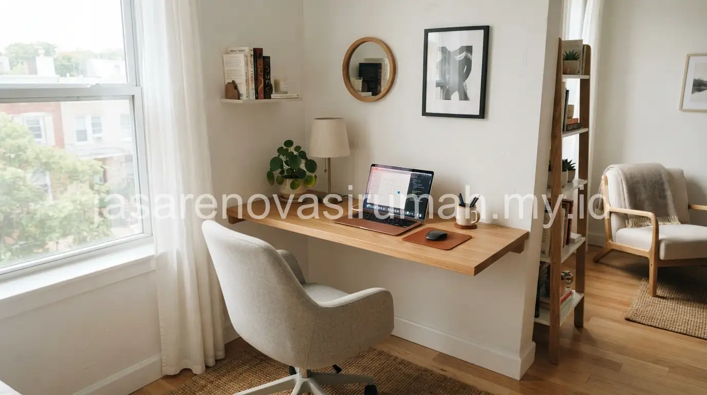
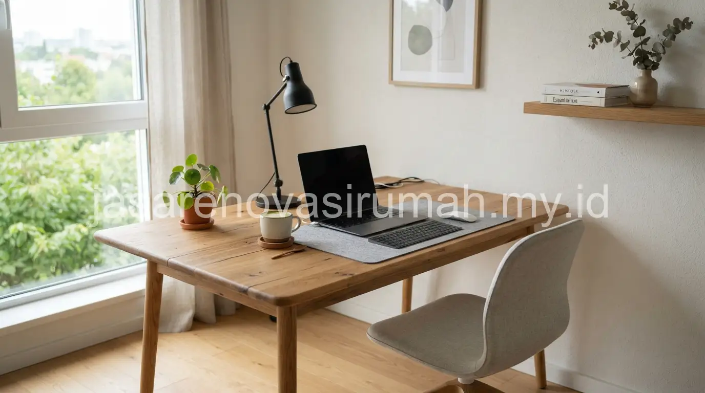

Desain ruang kerja home office minimalis bisa diwujudkan bahkan hanya dengan memanfaatkan sudut kamar atau area di bawah tangga, asalkan pencahayaan cukup, meja kerja proporsional, dan penyimpanan tertata rapi agar tetap fokus bekerja dari rumah.
Kebutuhan home office semakin umum seiring meningkatnya pola kerja remote atau hybrid, sehingga banyak rumah yang awalnya tidak memiliki ruang kerja khusus kini perlu menyisihkan sudut fungsional untuk aktivitas ini.
Bagaimana Menata Home Office di Ruangan atau Sudut Kecil Sekalipun?
Kunci utamanya adalah memanfaatkan area vertikal untuk penyimpanan dan memilih meja kerja berukuran ramping agar tidak memakan banyak ruang lantai.
Beberapa area yang sering dimanfaatkan sebagai home office di rumah berukuran terbatas:
- Sudut kamar tidur dengan meja kerja menempel dinding.
- Area di bawah tangga yang biasanya kosong dan jarang dimanfaatkan.
- Balkon tertutup yang diubah menjadi ruang kerja kecil dengan pencahayaan alami.
- Sudut ruang keluarga yang dipisahkan dengan rak buku sebagai partisi visual.
Prinsip pemanfaatan ruang terbatas ini sejalan dengan pendekatan efisiensi pada desain interior kamar tidur minimalis yang juga mengutamakan fungsi maksimal dari ruang yang tersedia.
Pencahayaan Seperti Apa yang Direkomendasikan untuk Ruang Kerja di Rumah?
Kombinasi cahaya alami dari jendela dan lampu meja dengan intensitas cukup terang adalah kombinasi terbaik untuk menjaga fokus dan mengurangi kelelahan mata saat bekerja dalam waktu lama.
Beberapa tips pencahayaan untuk home office:
- Posisikan meja kerja menghadap atau menyamping jendela agar mendapat cahaya alami tanpa silau langsung ke layar.
- Tambahkan lampu meja dengan cahaya netral hingga putih terang untuk mendukung fokus saat bekerja di malam hari.
- Hindari pencahayaan temaram yang cocok untuk relaksasi namun kurang mendukung produktivitas kerja.
- Gunakan tirai tipis jika cahaya matahari langsung terlalu menyilaukan layar komputer.
Furnitur Apa Saja yang Wajib Ada pada Home Office Minimalis?
Furnitur wajib untuk home office minimalis mencakup meja kerja dengan ukuran memadai, kursi ergonomis, dan rak penyimpanan untuk dokumen atau peralatan kerja.
Berikut furnitur dasar yang disarankan:
| Furnitur | Fungsi Utama | Tips Pemilihan |
|---|---|---|
| Meja kerja | Area utama bekerja | Pilih ukuran sesuai luas ruangan, hindari terlalu besar untuk ruang kecil |
| Kursi ergonomis | Menjaga postur tubuh saat kerja lama | Prioritaskan kenyamanan dibanding tampilan semata |
| Rak dinding | Penyimpanan dokumen dan peralatan | Manfaatkan ruang vertikal agar lantai tetap lega |
| Lampu meja | Pencahayaan tambahan saat malam | Pilih lampu dengan pengaturan tingkat kecerahan |
Untuk hasil yang lebih presisi sesuai ukuran ruangan dan kebiasaan kerja Anda, konsultasikan kebutuhan ini dengan jasa desain interior yang dapat membantu menata tata letak secara langsung di lokasi.
10 Inspirasi Konsep Home Office Minimalis
Berikut ragam konsep yang bisa disesuaikan dengan ruang yang tersedia di rumah Anda:
- Meja kerja menempel jendela dengan rak gantung di atasnya.
- Home office di bawah tangga dengan pencahayaan LED strip.
- Sudut kerja dengan partisi rak buku terbuka.
- Meja kerja lipat untuk ruang multifungsi.
- Home office bergaya Japandi dengan meja kayu natural.
- Meja kerja dua orang di ruang keluarga untuk pasangan yang sama-sama remote working.
- Home office di balkon tertutup dengan tanaman hias.
- Meja kerja minimalis dengan cable management rapi.
- Home office dengan papan gabus atau whiteboard kecil di dinding.
- Sudut kerja compact di dalam kamar tidur dengan tirai pembatas.

Kesalahan Umum Saat Mendesain Home Office Minimalis
Kesalahan yang paling sering terjadi adalah menempatkan meja kerja di area dengan pencahayaan buruk demi menghemat ruang, sehingga justru mengurangi kenyamanan dan produktivitas kerja.
Kesalahan lain yang perlu dihindari:
- Memilih kursi yang tidak ergonomis hanya karena tampilannya menarik.
- Tidak menyediakan cukup stop kontak listrik di dekat area kerja.
- Membiarkan kabel berantakan tanpa manajemen kabel yang rapi.
Pada akhirnya, home office minimalis yang baik tidak harus memiliki ruangan luas, melainkan penataan yang tepat antara pencahayaan, furnitur, dan penyimpanan.
Konsultasikan kebutuhan ruang kerja Anda dengan jasa desain interior dan lihat referensi tambahan pada portofolio interior kami sebelum menentukan konsep final.

Ainur Reza
Penulis Profesional & Praktisi Konstruksi
Ainur Reza adalah seorang penulis profesional yang memiliki ketertarikan mendalam pada dunia arsitektur dan konstruksi. Dengan pengalaman bertahun-tahun mengamati tren renovasi rumah, ia aktif membagikan panduan praktis, tips RAB, dan wawasan seputar material bangunan untuk membantu pemilik rumah mewujudkan hunian impian mereka dengan anggaran yang efisien.